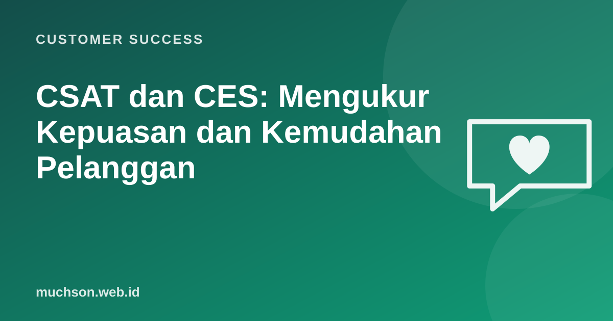

Beranda › Artikel › Customer Success
Customer SuccessCSAT dan CES: Mengukur Kepuasan dan Kemudahan Pelanggan
Banyak perusahaan berlomba "membuat pelanggan kagum" dengan kejutan dan layanan ekstra. Penelitian yang dipublikasikan di Harvard Business Review (2010) menunjukkan hal yang lebih sederhana sering lebih berpengaruh terhadap loyalitas: membuat urusan pelanggan mudah. Di sinilah CES melengkapi CSAT dan NPS.

Tiga metrik, tiga pertanyaan
| Metrik | Pertanyaan | Mengukur | Kapan |
|---|---|---|---|
| CSAT | "Seberapa puas Anda dengan [interaksi ini]?" (1-5) | Kepuasan sesaat | Setelah interaksi atau transaksi |
| CES | "[Perusahaan] memudahkan saya menyelesaikan masalah." (setuju 1-7) | Kemudahan / usaha | Setelah support, onboarding, checkout |
| NPS | "Seberapa mungkin Anda merekomendasikan?" (0-10) | Hubungan keseluruhan | Berkala, misalnya per kuartal |
Menghitung CSAT
Temuan penting tentang usaha pelanggan
Dixon, Freeman, dan Toman ("Stop Trying to Delight Your Customers", HBR 2010) melaporkan riset CEB terhadap puluhan ribu pelanggan: dari pelanggan yang mengalami interaksi layanan yang membutuhkan usaha besar, sekitar 96% menjadi lebih tidak loyal, dibanding sekitar 9% pada pelanggan dengan interaksi yang mudah. Melampaui harapan ternyata tidak banyak menambah loyalitas, sedangkan usaha yang berlebihan sangat merusaknya.
Sumber usaha yang paling sering
Tips menyusun survei
- Satu sampai tiga pertanyaan, selalu dengan satu pertanyaan terbuka "mengapa".
- Kirim segera setelah interaksi, saat masih diingat.
- Jangan minta pelanggan memberi nilai sempurna; itu merusak data.
- Pantau tingkat respons; hasil dari 5% responden mungkin tidak mewakili.
- Tindak lanjuti skor rendah secepatnya.
Tanya jawab
Mana yang paling penting: CSAT, CES, atau NPS?
Skala berapa untuk CES?
Apakah survei setelah setiap interaksi berlebihan?
Sumber dan bacaan lanjut
- Dixon, Freeman, Toman (2010): Stop Trying to Delight Your Customers, Harvard Business Review
- Net Promoter Score (artikel terkait)
- Menangani pelanggan marah (artikel terkait)